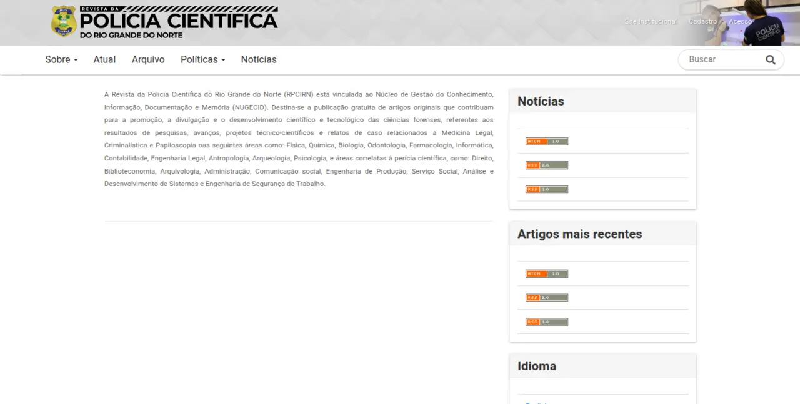

Em implantação
Revista da Polícia Científica do Rio Grande do Norte
Periódico científico da Polícia Científica do RN, mantido pelo NUGECID e publicado em Open Journal Systems, com submissão e avaliação por pares.
Sobre a revista
A RPCIRN reúne produção científica nas áreas de criminalística, medicina legal, identificação civil e temas afins da perícia oficial, aproximando o conhecimento técnico produzido no estado da comunidade acadêmica e da sociedade.
- Submissão de artigos pelo sistema OJS.
- Avaliação por pares.
- Acesso aberto ao conteúdo publicado.

Acesso
A revista está em processo de implantação. O endereço de acesso será publicado aqui assim que o portal entrar no ar.
Acessar revista — em breve